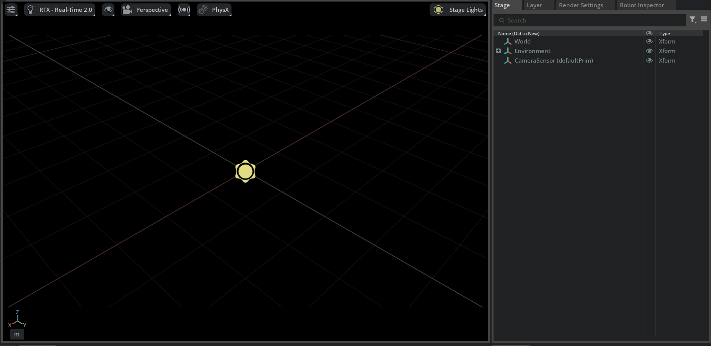
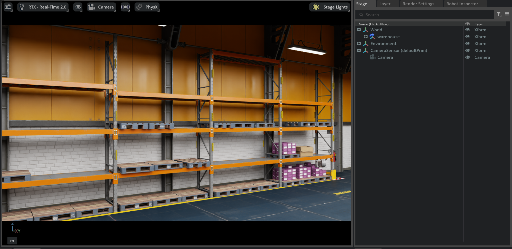
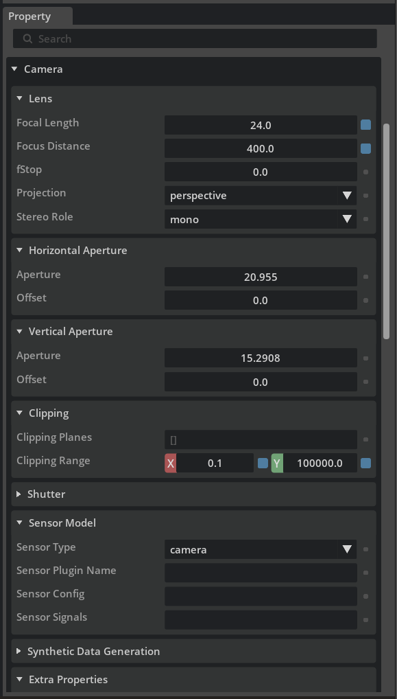
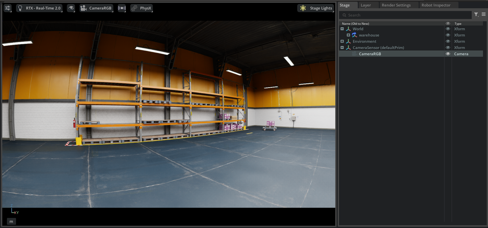
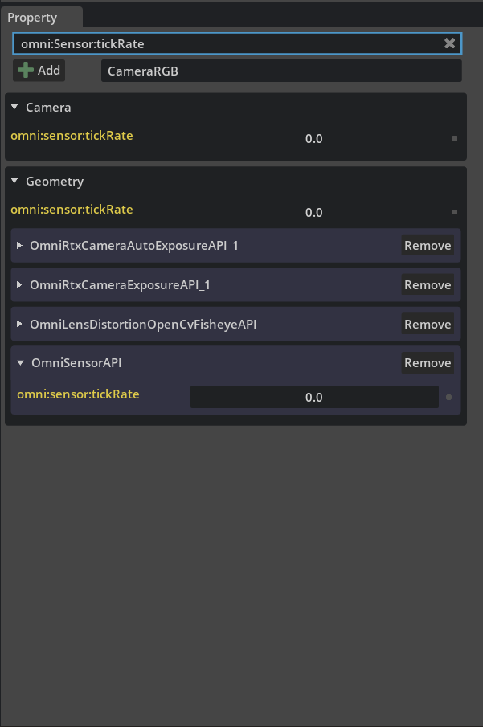
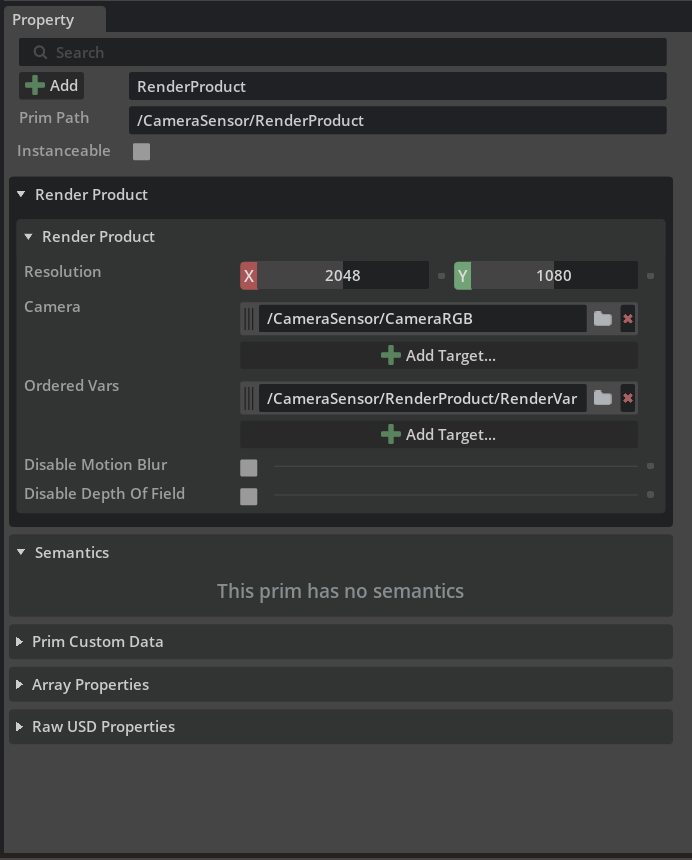
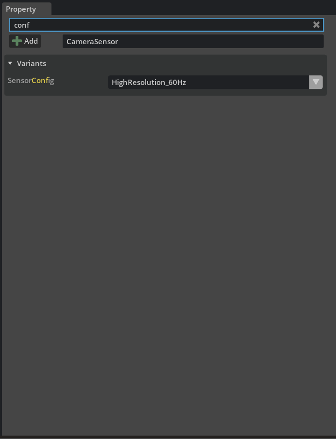

编写相机传感器 USD 资产#
本教程演示如何在 USD 中为 Isaac Sim 编写可复用的相机传感器资产。该资产可在下游工作流中添加至机器人、环境和其他场景，并与 Isaac Sim 中的传感器编写 API 兼容。
生成的 USD 资产将包含 Camera prim、RenderProduct prim 和 RenderVar prim。它将定义 OpenCV 鱼眼镜头畸变、传感器采样率、支持的分辨率和输出，以及用于根据所选分辨率切换采样率的 USD 变体集。
学习目标#
本教程详细介绍如何：
创建相机、渲染产品和渲染变量 prim。
编写相机、渲染产品和渲染变量之间的关系。
应用并配置 OpenCV 鱼眼镜头畸变 API 模式。
编写传感器采样率。
在变体集中存储多个传感器配置。
保存资产，验证其结构，并确认其得到保留。
先决条件#
请阅读相机传感器简介。
熟悉Script Editor，以便在 GUI 中运行 Python API。
概述#
本教程以单一工作流的形式组织，包含三个连续阶段：
设置相机和测试环境：创建传感器根
Xform，添加相机，加载测试环境，配置相机属性，并在 GUI 中应用镜头畸变。在 USD 中编写传感器：使用 Script Editor 创建渲染产品、渲染变量、关系、传感器 Tick 速率和变体。
验证并保存资产：保存资产，运行 RGB 传感器验证器，并在新场景中验证结果。
设置相机和测试环境#
创建传感器根 Xform#
从新的空舞台开始（File > New），然后创建一个单独的根 Xform（一个变换 prim）以包含整个传感器。将传感器分组到一个 Xform 下并将其设为舞台的默认 prim，可使完成的资产在被引用到其他舞台时拥有清晰的入口点。
在 Stage 面板内右键单击（如果未打开，请通过 Window > Stage 打开），然后选择 Create > Xform，或者从顶部菜单栏点击 Create > Xform。一个新的
Xform会被添加到舞台中，默认位于/Worldprim 下。将新的
Xform重命名为CameraSensor：在 Stage 面板中双击其名称（或右键单击并选择 Rename），然后输入CameraSensor。将
Xform设为顶层 prim，使其成为该资产（asset）的根节点。如果它是在/World下创建的，请选中它，打开 Edit 菜单，然后单击 Unparent。确认其在 Property 面板中的路径现在为/CameraSensor而不是/World/CameraSensor。右键单击
/CameraSensorprim，然后选择 Set as Default Prim。
在后续步骤中创建的所有传感器 prim 都将放置在此 Xform 下。


Stage 树显示顶层 /CameraSensor Xform 已设置为 Stage 的默认 prim。#
创建相机#
将相机作为传感器根节点 Xform 的子节点添加。此操作遵循与 教程 4：向机器人添加相机和传感器 相同的工作流程。
在 Stage 面板中，选中
/CameraSensorXform，以便在其下方创建新相机。从菜单栏中，选择 Create > Camera。相机将出现在 Stage 面板中，视口中将显示一个表示相机视图的灰色线框。
将相机重命名为
CameraRGB。这将有助于我们区分您正在创建的相机和从仓库场景加载的相机。
您将在下一步加载仓库场景后对准相机。
加载测试环境#
本教程使用 warehouse USD 作为临时测试环境，提供可见几何体用于瞄准和验证相机。它不属于最终的传感器资产，并在保存前移除。
如果内容浏览器尚未打开，请打开它（Window > Browsers > Content）。
在 Stage 面板中，选择
/World或您希望加载 warehouse 的顶层环境 prim。在内容浏览器中，打开 Isaac Sim > Environments > Simple_Warehouse，然后将
warehouse.usd拖入视口以将其添加到当前 stage。加载后，请确认视口中可见 warehouse。选择
/CameraSensor根Xform并设置其变换，使相机朝向 warehouse。在根节点（而非相机）上编辑姿态可使相机保持在资产原点，因此下游场景只需变换根节点即可放置整个传感器。作为参考，本教程中的示例图像在/CameraSensorXform上使用了以下值：Translate: X =
0.0, Y =-2.72255, Z =1.98124Orient: X =
90.0, Y =60.127, Z =0.0Scale: X =
1.0, Y =1.0, Z =1.0
点击视口左上角的 Perspective 并选择 Cameras > CameraRGB，将视口切换为通过相机查看。确认相机可以看到场景。
注意
相机图标默认在视口中隐藏。要查看相机图标，请前往视口顶部的 eye 菜单，并选择 Show By Type > Cameras。


使用示例变换值，通过 /CameraSensor/CameraRGB 查看仓库测试环境。#
配置相机属性#
在 Stage 树中选择相机 prim。在 Property 面板中，配置传感器所需的相机属性。对于本教程，您可以使用如下值：
Focal Length（焦距）：
24。这控制视场角；较小的值提供更宽的视野。Horizontal Aperture（水平光圈）：
20.955和 Vertical Aperture（垂直光圈）：15.2908。传感器尺寸和焦距共同决定视场角。Clipping Range（裁剪范围）：
(0.1, 100000)。这些是相机渲染的近距和远距。Projection（投影）：
perspective。
对于这个简单的演示，这些值并不匹配经过校准的物理相机，而是为了产生清晰的相机输出而选择的。


Property 面板显示已配置的相机镜头、光圈、投影和裁剪值。#
注意
在 Camera prims 上，焦距和光圈以十分之一舞台单位（tenths of stage units）而非舞台单位定义。有关这些光学参数的完整详细信息，请参阅 Camera Sensors。
添加镜头畸变#
Omniverse 相机支持对多种物理镜头畸变进行建模。有关支持的镜头畸变模型的详细信息，请参阅 Calibration and Camera Lens Distortion Models。在本示例中，您将应用 OpenCV 鱼眼镜头畸变模型。
在 Stage 窗口中，选择 /CameraSensor/CameraRGB prim，然后在 Property 面板中点击 Add > Edit API Schema 并选择 OmniLensDistortionOpenCvFisheyeAPI。有关详细的 UI 工作流程，请参阅 How To Add Schemata to Cameras。如果 Edit API Schema 未作为选项出现，请打开 Extensions 窗口（Window > Extensions），搜索 omni.kit.widget.schema_api（Property Window Edit API Schema）并启用它。
应用该 schema 后，其属性将显示在 Property 面板的 Extra Properties 部分下。向下滚动到该部分以找到畸变属性（fx、fy、cx、cy 以及 k1–k4）并在那里进行编辑。
为了演示目的，请将畸变属性设置为略偏离默认值的数值，以便应用鱼眼畸变，例如：
fx:905和fy:805。这些是以像素为单位的焦距。cx:1030和cy:515。这是以像素为单位的主点。k1：0.00247（将k2–k4保持为其默认0）。这些是径向畸变系数。
对于已校准的传感器，请使用相机校准过程中获得的值。确认畸变效果出现在视口或渲染的相机输出中。


应用 OpenCV 鱼眼镜头畸变后的相机输出。#
完成传感器创建#
三种 prim 类型协同工作以定义传感器及其输出，每种类型具有不同的作用：
Cameraprim：配置所建模的物理相机，包括其内参（焦距、光圈和镜头畸变）、外参（场景中的姿态）以及 tick 速率。RenderProductprim：控制 RTX 渲染器如何渲染该相机，包括输出分辨率，并引用其从中绘制的Camera。RenderVarprim：指定 RTX 渲染器为传感器生成哪些输出，例如颜色、深度或表面法线。
您已在 GUI 中创建了 /CameraSensor 根 Xform 和 CameraRGB Camera prim，因此以下代码片段基于当前 stage 构建，而不是重新创建它们。
所有代码示例均来自完整且可运行的文件 camera_sensor_usd_tutorial.py。此处提供完整脚本作为参考：它包含本教程中描述的完整创建工作流程，可以粘贴到 Script Editor 中并一次性运行。
camera_sensor_usd_tutorial.py
# <start-apply-sensor-api-snippet>
import isaacsim.core.experimental.utils.prim as prim_utils
import isaacsim.core.experimental.utils.stage as stage_utils
from isaacsim.core.experimental.objects import Camera
from pxr import Gf, UsdRender
# Reuse the GUI-authored root, or create it when running the complete script on an empty stage.
sensor_root_path = "/CameraSensor"
root_prim = stage_utils.define_prim(sensor_root_path, type_name="Xform")
stage_utils.get_current_stage(backend="usd").SetDefaultPrim(root_prim)
camera_path = sensor_root_path + "/CameraRGB"
# Preserve the GUI-authored transform when wrapping the camera.
camera = Camera(camera_path, reset_xform_op_properties=False)
camera_prim = camera.prims[0]
# Variants set the tick rate later; the default is 0 Hz (every frame).
# `OmniSensorAPI` has no typed schema for `prim_utils.ensure_api`.
if not prim_utils.has_api(camera_prim, "OmniSensorAPI"):
camera_prim.ApplyAPI("OmniSensorAPI")
# <end-apply-sensor-api-snippet>
# <start-create-render-product-snippet>
# Variants set the resolution later.
render_product_path = sensor_root_path + "/RenderProduct"
render_product_prim = stage_utils.define_prim(render_product_path, type_name="RenderProduct")
# Render product relationships have no experimental wrapper.
render_product = UsdRender.Product(render_product_prim)
render_product.CreateCameraRel().SetTargets([camera_path])
# <end-create-render-product-snippet>
# <start-add-render-var-snippet>
# `sourceName` selects the output type.
render_var_path = render_product_path + "/RenderVar"
render_var_prim = stage_utils.define_prim(render_var_path, type_name="RenderVar")
source_name_attr = prim_utils.create_prim_attribute(render_var_prim, name="sourceName", type_name="string")
source_name_attr.Set("LdrColor")
# Render product relationships have no experimental wrapper.
render_product.CreateOrderedVarsRel().AddTarget(render_var_path)
# <end-add-render-var-snippet>
# <start-author-variants-snippet>
resolution_attr = prim_utils.create_prim_attribute(render_product_prim, name="resolution", type_name="int2")
tick_rate_attr = prim_utils.create_prim_attribute(camera_prim, name="omni:sensor:tickRate", type_name="float")
# Put variants on the root so they can configure both descendants.
# Experimental APIs cannot create variants or enter edit contexts.
variant_set = root_prim.GetVariantSets().AddVariantSet("SensorConfig")
configs = {
"HighResolution_60Hz": (Gf.Vec2i(1920, 1080), 60.0),
"HighSpeed_120Hz": (Gf.Vec2i(1280, 720), 120.0),
}
for variant_name, (resolution, tick_rate) in configs.items():
variant_set.AddVariant(variant_name)
prim_utils.set_prim_variants(root_prim, variants=[("SensorConfig", variant_name)])
# Author values in the selected variant.
with variant_set.GetVariantEditContext():
resolution_attr.Set(resolution)
tick_rate_attr.Set(tick_rate)
# Select the default variant.
prim_utils.set_prim_variants(root_prim, variants=[("SensorConfig", "HighResolution_60Hz")])
# <end-author-variants-snippet>
# <start-visualize-snippet>
import omni.kit.viewport.utility
viewport = omni.kit.viewport.utility.get_active_viewport()
if viewport is None:
raise RuntimeError("No active viewport is available")
viewport_render_product_path = viewport.render_product_path
viewport.render_product_path = render_product_path
# <end-visualize-snippet>
# <start-restore-viewport-snippet>
viewport.render_product_path = viewport_render_product_path
# <end-restore-viewport-snippet>
通过点击顶部菜单栏中的 Window > Script Editor 打开 Script Editor，然后粘贴每个代码片段并点击 Run。
应用 Sensor API#
将 OmniSensorAPI schema 应用于相机，使其作为具有 tick rate（渲染器渲染该相机的频率，单位为 Hz）的传感器运行。此代码片段仅应用该 schema；下一步中设置的 variant set 将定义 tick rate 的值。单独应用 schema 时，tick rate 保持为 schema 默认值 0，即自动触发模式，每帧都进行渲染。有关详细信息，请参阅 Multi-Tick Rendering。
import isaacsim.core.experimental.utils.prim as prim_utils
import isaacsim.core.experimental.utils.stage as stage_utils
from isaacsim.core.experimental.objects import Camera
from pxr import Gf, UsdRender
# Reuse the GUI-authored root, or create it when running the complete script on an empty stage.
sensor_root_path = "/CameraSensor"
root_prim = stage_utils.define_prim(sensor_root_path, type_name="Xform")
stage_utils.get_current_stage(backend="usd").SetDefaultPrim(root_prim)
camera_path = sensor_root_path + "/CameraRGB"
# Preserve the GUI-authored transform when wrapping the camera.
camera = Camera(camera_path, reset_xform_op_properties=False)
camera_prim = camera.prims[0]
# Variants set the tick rate later; the default is 0 Hz (every frame).
# `OmniSensorAPI` has no typed schema for `prim_utils.ensure_api`.
if not prim_utils.has_api(camera_prim, "OmniSensorAPI"):
camera_prim.ApplyAPI("OmniSensorAPI")
确认 OmniSensorAPI schema 已应用于相机 prim。


Property 面板显示已应用 OmniSensorAPI，且 omni:sensor:tickRate 属性可用。#
创建 Render Product Prim#
创建一个 render product prim，并通过 camera relationship 将其连接到现有的相机。render product 定义了与相机关联的渲染输出。其分辨率稍后由 variant set 定义，因此此处不设置。
# Variants set the resolution later.
render_product_path = sensor_root_path + "/RenderProduct"
render_product_prim = stage_utils.define_prim(render_product_path, type_name="RenderProduct")
# Render product relationships have no experimental wrapper.
render_product = UsdRender.Product(render_product_prim)
render_product.CreateCameraRel().SetTargets([camera_path])
运行脚本后，确认 render product prim 出现在 Stage 树的 /CameraSensor/RenderProduct 处，并且其 camera relationship 指向 /CameraSensor/CameraRGB。
创建 Render Var Prim 并连接它#
创建一个 render var prim 并将其连接到 render product。render var 定义了 render product 产生的输出类型，例如颜色、深度或法线。
在此示例中，render var 作为 render product 的子级创建，并通过 render product 的 orderedVars 关系进行连接。
# `sourceName` selects the output type.
render_var_path = render_product_path + "/RenderVar"
render_var_prim = stage_utils.define_prim(render_var_path, type_name="RenderVar")
source_name_attr = prim_utils.create_prim_attribute(render_var_prim, name="sourceName", type_name="string")
source_name_attr.Set("LdrColor")
# Render product relationships have no experimental wrapper.
render_product.CreateOrderedVarsRel().AddTarget(render_var_path)
运行脚本后，选择 render product prim 并验证其是否引用了相机和 render var。


/CameraSensor/RenderProduct 的 Property 面板，显示指向 /CameraSensor/CameraRGB 的 camera 关系以及指向 /CameraSensor/RenderProduct/RenderVar 的 orderedVars 关系。#
注意
分辨率存储在 render product 的 resolution 属性中，以宽度和高度的整数对形式表示。该属性由下方的 variant set 写入（1920 x 1080 或 1280 x 720）；在此之前，render product 使用 USD 的默认分辨率。
将 Viewport 指向已写入的 Render Product#
在添加可选的 variant set 之前，请将 viewport 重定向到 /CameraSensor/RenderProduct，以便在配置时查看传感器输出。
首先，启用 viewport 的分辨率叠加层：
点击 viewport 工具栏中的 Eye 图标（Show Settings）。
选择 Heads Up Display > Resolution。
叠加层显示当前的 viewport 分辨率（通常为 1280×720）。这反映了 Isaac Sim 用于交互性能的原生分辨率，而不是 /CameraSensor/RenderProduct 上写入的分辨率。
要理解它们为何不同，请打开 Layer 窗口（Window > Layers）。在 Root Layer 下，展开 /Render/OmniverseKit/HydraTextures 范围并找到 omni_kit_widget_viewport prim。这是一个隐藏的、自动生成的 RenderProduct，视口在内部使用它。当您从视口的 Cameras 菜单中选择相机时，Isaac Sim 会将此隐藏的渲染产品重定向到该相机，并以 1280×720 的分辨率进行渲染以保证性能。您可以修改此 prim，但由于它是自动生成的，因此不能作为传感器 USD 资产的一部分进行发布。
要可视化 /CameraSensor/RenderProduct 的实际输出，请在 Script Editor 中运行以下代码片段，以重定向活动视口使用您刚刚创建的渲染产品：
import omni.kit.viewport.utility
viewport = omni.kit.viewport.utility.get_active_viewport()
if viewport is None:
raise RuntimeError("No active viewport is available")
viewport_render_product_path = viewport.render_product_path
viewport.render_product_path = render_product_path
运行代码片段后，视口中的 Resolution 叠加层将从原生的 1280×720 更改为与 /CameraSensor/RenderProduct 上设置的分辨率匹配。此时，视口通过设置的渲染产品进行渲染，而不是通过隐藏的自动生成渲染产品。
注意
当您使用上述代码片段将视口重定向到 /CameraSensor/RenderProduct 时，Resolution 叠加层可能会显示意外的值。这是在运行时切换活动渲染产品时 Kit 的已知行为，将在未来的更新中解决。设置的渲染产品及其关系是正确的；这仅影响使用本教程可视化代码片段时的视口显示。
该代码片段将视口的原始渲染产品路径保存在 viewport_render_product_path 中。在删除仓库或切换阶段之前，请运行以下代码片段以将视口恢复到其原始渲染产品：
viewport.render_product_path = viewport_render_product_path
添加传感器配置 Variant Set（可选）#
变体可用于在单个 USD 资产中存储多个传感器配置。以下代码片段在传感器根节点 Xform 上创建了一个 SensorConfig 变体集，其中包含两个变体，分别用于在高分辨率模式（HighResolution_60Hz，1920 x 1080 @ 60 Hz）和高速模式（HighSpeed_120Hz，1280 x 720 @ 120 Hz）之间切换。每个变体都会同时写入渲染产品分辨率和相机 tick rate，因此切换变体可一次性重新配置整个传感器。
有关变体集的背景信息，请参阅 OpenUSD Variant Set 文档。此 SensorConfig 设置是一个实用变体集的示例。开发人员可以根据其产品规格，更改 Camera prim 和 RenderProduct prim 上的任意属性。
变体集是在根 Xform 上写入的，而不是在相机上，因为变体只能对其所在的 prim 及其后代 prim 写入意见。相机和渲染产品都是根节点的后代。前面的步骤未设置分辨率和 tick rate，因此这些特定于变体的意见是唯一的意见，会直接生效。
resolution_attr = prim_utils.create_prim_attribute(render_product_prim, name="resolution", type_name="int2")
tick_rate_attr = prim_utils.create_prim_attribute(camera_prim, name="omni:sensor:tickRate", type_name="float")
# Put variants on the root so they can configure both descendants.
# Experimental APIs cannot create variants or enter edit contexts.
variant_set = root_prim.GetVariantSets().AddVariantSet("SensorConfig")
configs = {
"HighResolution_60Hz": (Gf.Vec2i(1920, 1080), 60.0),
"HighSpeed_120Hz": (Gf.Vec2i(1280, 720), 120.0),
}
for variant_name, (resolution, tick_rate) in configs.items():
variant_set.AddVariant(variant_name)
prim_utils.set_prim_variants(root_prim, variants=[("SensorConfig", variant_name)])
# Author values in the selected variant.
with variant_set.GetVariantEditContext():
resolution_attr.Set(resolution)
tick_rate_attr.Set(tick_rate)
# Select the default variant.
prim_utils.set_prim_variants(root_prim, variants=[("SensorConfig", "HighResolution_60Hz")])
运行脚本后，若要切换变体：
在 Stage 树中选择
/CameraSensor。在 Property 面板中，滚动到面板顶部。变体集显示为 prim 属性上方的下拉菜单，位于标记为 Variants 的部分中。
使用 SensorConfig 下拉菜单在
HighResolution_60Hz和HighSpeed_120Hz之间切换。验证选择
HighResolution_60Hz时，分辨率设置为 1920 x 1080 且 tick rate 设置为 60，以及选择HighSpeed_120Hz时，分辨率设置为 1280 x 720 且 tick rate 设置为 120。


显示 SensorConfig 变体已设置为 HighResolution_60Hz 的 Property 面板。#
验证并保存资产#
保存 USD#
在保存之前，请移除 warehouse，以确保资产中仅包含传感器。在 Stage 树中，选择 warehouse 根 prim（即加载 warehouse.usd 时添加的 prim）并将其删除。由于 /CameraSensor 是 stage 的默认 prim，剩余的传感器层级结构将保持完整，并成为该资产的入口点。
此外，请将 /CameraSensor 根 Xform 及其下方的 CameraRGB prim 上的所有变换归零。您在根节点上设置的用于将传感器对准测试环境的姿态仅用于验证目的；在 Property 面板中将平移和旋转重置为 0，并将缩放重置为 1，可为保存的资产提供一个干净的原始位置，以便下游场景自行定位。
然后将 stage 保存为 USD 文件。从顶部 Menu Bar 中，点击 File > Save As，然后选择文件名和位置，例如 /path/to/camera_sensor.usd。
验证已保存的 USD#
使用 Asset Validator 窗口通过 RGBSensorUsdRule 验证已保存的文件：
从 Menu Bar 中，选择 Window > Asset Validator。
在 Asset Validator 窗口中，选择 Prims，然后使用其右侧的下拉菜单选择
/CameraSensor。点击 Disable All，搜索
RGBSensorUsdRule，并启用该规则。点击 Analyze 并确认 Results 面板报告没有问题。
注意
如果 Window 菜单中不可用 Asset Validator，请打开 Window > Extensions，搜索 omni.asset_validator.ui 并启用它。
RGBSensorUsdRule 检查默认 Xform、Camera 和 RenderProduct 数量、OmniSensorAPI 和 tick rate、正分辨率、相机目标以及 LdrColor RenderVar 连接。它不会验证相机光学参数或镜头畸变校准；请在 Property 面板和渲染输出中验证这些设置。
将资产引用到新场景中#
为了确认保存的资产可重复使用，请按照下游工作流的方式将其引入新场景，然后检查它是否能复现您之前验证过的相机输出。
创建一个新 stage（File > New）。再次添加仓库测试环境：在 Content Browser 中，打开 Isaac Sim > Environments > Simple_Warehouse，并将
warehouse.usd拖入视口。将保存的
camera_sensor.usd拖入视口（或右键单击它并选择 Add as Reference），以将传感器资产引用到 stage 中。在 Stage 树中，展开被引用的传感器 prim，并确认它仅包含
CameraRGB、RenderProduct和RenderVarprims，且没有仓库几何体。选择被引用的传感器根节点
Xform，并将其变换设置为之前使用的相同示例值。这会重新应用保存前已归零的位姿，使相机再次指向仓库。将视口切换为通过相机查看（Perspective > Cameras > CameraRGB），并确认视图与保存前看到的一致，包括您配置的鱼眼畸变（如果已配置）。
故障排除#
渲染产品未使用相机。 验证渲染产品的 camera 关系是否指向 /CameraSensor/CameraRGB，以及相机 prim 是否存在。
渲染变量输出缺失。 验证渲染产品的 orderedVars 关系是否指向渲染变量 prim，以及所选的渲染变量 sourceName 是否受当前渲染器和 Isaac Sim 版本支持。
镜头畸变不可见。 验证 OmniLensDistortionOpenCvFisheyeAPI schema 是否已应用于相机，畸变属性是否已编写，omni:lensdistortion:model 属性是否设置为 opencvFisheye，以及畸变值是否足够大以产生可见效果。
变体未更新值。 验证变体集是否在 /CameraSensor 根节点 Xform 上编写，因为变体只能影响其定义所在的 prim 及其后代。确认分辨率和 tick-rate 值是否在变体编辑上下文中编写，是否选择了预期的变体，以及在创建变体后是否保存了 stage。此外，验证这些属性上是否存在直接意见（direct opinions）覆盖了变体值，因为直接意见的优先级高于变体意见。
保存的资产仍包含仓库。在保存之前删除仓库根 prim，并确认 /CameraSensor 已设置为 stage 的默认 prim，以便引用的资产仅包含传感器。
总结#
在本教程中，你创建了一个可复用的相机传感器 USD 资产，其中包含相机、渲染产品、渲染变量、渲染关系以及 OpenCV 鱼眼镜头畸变设置。如果你完成了可选步骤，该资产还包含传感器 tick-rate 以及用于在传感器配置之间切换的变体集。现在，你可以在其他 Isaac Sim 工作流中使用此 USD 资产，或将其作为构建更高级相机传感器资产的起点。
后续步骤#
在 Camera Sensors 中了解有关相机建模的更多信息。
浏览 Isaac Sim 随附的现成 camera and depth sensor assets。